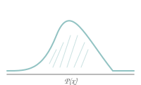
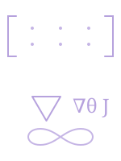

[
Home
/
Writing
/
RL Notes
]
Chapter 5 of 7
Learning from Experience — MC, TD & Control
June 2026
●
15 min read
●
Model-Free RL
← Previous Chapter
Dynamic Programming — When You Know the World
Next Chapter →
Policy Gradients — Optimizing the Policy Directly